생산자동화산업기사 (2014-03-02 기출문제)
1과목: 기계가공법 및 안전관리
1. 일반적으로 각도 측정에 사용되는 것이 아닌 것은?
- 컴비네이션 세트
- 나이프 에지
- 광학식 클리노미터
- 오토 콜리메이터
(정답률: 81%)

2. 공기 마이크로메타를 그 원리에 따라 분류할 때 이에 속하지 않는 것은?
- 유량식
- 배압식
- 광학식
- 유속식
(정답률: 72%)
3. 선반의 심압대가 갖추어야 할 조건으로 틀린 것은?
- 베드의 안내면을 따라 이동할 수 있어야 한다.
- 센터는 편위시킬 수 있어야 한다.
- 베드의 임의의 위치에서 고정할 수 있어야 한다.
- 심압축은 중공으로 되어 있으며 끝부분은 내셔널테이퍼로 되어 있어야 한다.
(정답률: 79%)
4. 길이가 짧고 지름이 큰 공작물을 절삭하는데 사용되는 선반으로 면판을 구비하고 있는 것은?
- 수직선반
- 정면선반
- 탁상선반
- 터릿선반
(정답률: 74%)
5. 해머 작업의 안전수칙에 대한 설명으로 틀린 것은?
- 해머의 타격면이 넓어진 것을 골라서 사용한다.
- 장갑이나 기름이 묻은 손으로 자루를 잡지 않는다.
- 담금질된 재료는 함부로 두드리지 않는다.
- 쐐기를 박아서 해머의 머리가 빠지지 않는 것을 사용한다.
(정답률: 91%)
6. 기어 피치원의 지름이 150 mm, 모듈(module)이 5인 표준형 기어의 잇수는? (단, 비틀림각은 30° 이다.)
- 15개
- 30개
- 45개
- 50개
(정답률: 84%)
7. 마이크로미터 측정면의 평면도 검사에 가장 적합한 측정기기는?
- 옵티컬 플랫
- 공구 현미경
- 광학식 클리노미터
- 투영기
(정답률: 79%)
8. 추축대의 위치를 정밀하게 하기 위하여 나사식 측정장치, 다이얼게이지, 광학적 측정장치를 갖추고 있는 보링머신은?
- 수직 보링머신
- 보통 보링머신
- 지그 보링머신
- 코어 보링머신
(정답률: 77%)
9. 고속가공의 특성에 대한 설명이 옳지 않은 것은?
- 황삭부터 정삭까지 한 번의 셋업으로 가공이 가능하다.
- 열처리된 소재는 가공할 수 없다.
- 칩(Chip)에 열이 집중되어, 가공물은 절삭열 영향이 적다.
- 절삭저항이 감소하고, 공구수명이 길어진다.
(정답률: 72%)
10. 측정기, 피측정물, 자연 환경 등 측정자가 파악할 수 없는 변화에 의하여 발생하는 오차는?
- 시차
- 우연오차
- 계통오차
- 후퇴오차
(정답률: 89%)
11. 기계 작업시 안전 사항으로 가장 거리가 먼 것은?
- 기계 위에 공구나 재료를 올려 놓는다.
- 선반 작업시 보호안경을 착용한다.
- 사용 전 기계·기구를 점검한다.
- 절삭공구는 기계를 정지시키고 교환한다.
(정답률: 95%)
12. 밀링머신에 관한 설명으로 옳지 않는 것은?
- 테이블의 이송속도는 밀링커터 날 1개당 이송거리 × 커터의 날 수 × 커터의 회전수로 산출한다.
- 플레노형 밀링머신은 대형의 공작물 또는 중량물의 평면이나 홈 가공에 사용한다.
- 하향절삭은 커터의 날이 일감의 이송방향과 같으므로 일감의 고정이 간편하고 뒤틈 제거장치가 필요 없다.
- 수직 밀링머신은 스핀들이 수직방향으로 장치되며 엔트밀로 홈 깎기, 옆면 깎기 등을 가공하는 기계이다.
(정답률: 81%)
13. 절삭공구의 구비조건으로 틀린 것은?
- 고온 경도가 높아야 한다.
- 내마모성이 좋아야 한다.
- 마찰계수가 적어야 한다.
- 충격을 받으면 파괴되어야 한다.
(정답률: 95%)
14. 선반에서 가공할 수 있는 작업이 아닌 것은?
- 기어절삭
- 테이퍼절삭
- 보리
- 총형절삭
(정답률: 80%)
15. 서멧(Cermet)공구를 제작하는 가장 적합한 방법은?
- WC(텅스텐 탄화물)을 Co로 소결
- Fe에 Co를 가한 소결초경 합금
- 주성분이 W, Cr, Co, Fe 로 된 주조 합금
- Al2O3 분말에 TiC 분말을 혼합 소결
(정답률: 69%)
16. 밀링머신에서 단식분할법을 사용하여 원주를 5등분하려면 분할크랭크를 몇 회전씩 돌려가면서 가공하면 되는가?
- 4
- 8
- 9
- 16
(정답률: 68%)
17. 센터리스 연삭작업의 특징이 아닌 것은?
- 센터구멍의 필요 없는 원통 연삭에 편리하다.
- 연속작업을 할 수 있어 대량생산에 적합하다.
- 대형 중량물도 연삭이 용이하다.
- 가늘고 긴 가공물의 연삭에 적합하다.
(정답률: 78%)
18. 연삭액의 구비조건으로 틀린 것은?
- 거품 발생이 많을 것
- 냉각성이 우수할 것
- 인체에 해가 없을 것
- 화학적으로 안정될 것
(정답률: 93%)
19. 초음파 가공에 주로 사용하는 연삭입자의 재질이 아닌 것은?
- 산화알루미나계
- 다이아몬드 분말
- 탄화규소계
- 고무분말계
(정답률: 73%)
20. 기어가 회전운동을 할 때 접촉하는 것과 같은 상대운동으로 기어를 절삭하는 방법은?
- 창성식 기어 절삭법
- 모형식 기어 절삭법
- 원판식 기어 절삭법
- 성형공구 기어 절삭법
(정답률: 83%)
2과목: 기계제도 및 기초공학
21. 다음 투상도 중 KS 제도 통칙에 따라 올바르게 작도된 투상도는?
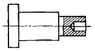
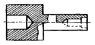
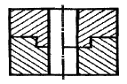
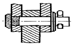
(정답률: 80%)
22. 깊은 홈 볼 베어링의 안지름이 25mm 일 때 이 베어링의 안지름 번호는?
- 00
- ⑤
- 25
- 50
(정답률: 82%)
23. 도면의 재질란에 SM25C 의 재료기호가 기입되어 있다. 여기서 “25”가 나타내는 뜻은?
- 탄소 함유량 22 ~ 28 %
- 탄소 함유량 0.22 ~ 0.28 %
- 최저 인장 강도 25 kPa
- 최저 인장 강도 25 MPa
(정답률: 77%)
24. 그림과 같이 제 3각법으로 나타낸 정투상도에서 평면도로 알맞은 것은?
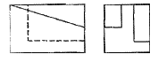
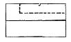
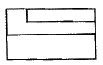
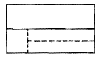
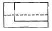
(정답률: 77%)
25. 다음 중 일반적으로 길이 방향으로 단면하여 나타내도 무방한 것은?
- 볼트(Bolt)
- 키(Key)
- 리벳(Rivet)
- 미끄럼 베어링(Sliding Bearing)
(정답률: 63%)
26. KS 규격에 따른 회 주철품의 재료 기호는?
- WC
- SB
- GC
- FC
(정답률: 75%)
27. 도면의 공치 치수는 어떤 끼워 맞춤인가?
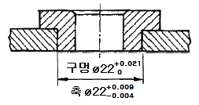
- 헐거움 끼워맞춤
- 가열 끼워맞춤
- 중간 끼워맞춤
- 억지 끼워맞춤
(정답률: 77%)
28. 그림과 같은 기하공차의 해석으로 가장 적합한 것은?
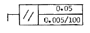
- 지정 길이 100mm에 대하여 0.⑤mm, 전체길이에 대해 0.0⑤mm의 대칭도
- 지정 길이 100mm에 대하여 0.⑤mm, 전체길이에 대해 0.0⑤mm의 평행도
- 지정 길이 100mm에 대하여 0.0⑤mm, 전체길이에 대해 0.⑤mm의 대칭도
- 지정 길이 100mm에 대하여 0.0⑤mm, 전체길이에 대해 0.⑤mm의 평행도
(정답률: 74%)
29. 도면에서 두 종류 이상의 선이 같은 장소에서 겹치게 될 경우 표시되는 선의 우선순위가 높은 것부터 낮은 순서대로 나열되어 있는 것은?
- 외형선, 숨은선, 절단선, 중심선
- 외형선, 절단선, 숨은선, 중심선
- 외형선, 중심선, 숨은선, 절단선
- 절단선, 중심선, 숨은선, 외형선
(정답률: 86%)
30. 다음 표면의 결 도시기호에서 지시하는 가공법은?
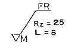
- 밀링 가공
- 브로치 가공
- 보링 가공
- 리머 가공
(정답률: 77%)
31. 밑면이 정사각형이고 높이가 10cm인 직육면체의 체적이 250cm3이다. 밑면의 한 변의 길이는?
- 2 cm
- 5 cm
- 10 cm
- 20 cm
(정답률: 82%)
32. 길이가 r 인 막대의 끝에 힘 F를 가할 때 토크를 구하는 식은?
- T = F × r
- T = F / r
- T = r / F
- T = F × r2
(정답률: 88%)
33. 이송속도가 0.2cm/sec인 물체가 2분 동안 이동한 거리는 몇 m 인가?
- 24 m
- 60 m
- 0.24 m
- 0.6 m
(정답률: 79%)
34. 프레스가공에서 원판을 전단하려고 할 때 가장 크게 작용되는 응력은?
- 굽힘응력
- 인장응력
- 전단응력
- 압축응력
(정답률: 82%)
35. 도선의 전기저항에 대한 설명으로 틀린 것은?
- 도선의 고유저하의 값에 비례한다.
- 도선의 단면적에 비례한다.
- 도선의 길이에 비례한다.
- 도선에 전류를 흐르기 어렵게 하는 물질의 작용이다.
(정답률: 80%)
36. 다음 중 전압에 대한 설명으로 틀린 것은?
- 전지를 직렬로 연결하면 각각의 전지전압을 합한 전압이 전체 전압이다.
- 저항의 각 단자에 걸린 전위의 차이를 전압이라 한다.
- 도선의 전압은 그 저항값과 흐르는 전류의 곱으로 구할 수 있다.
- 도선에서 전류를 흐르기 어렵게 하는 물질의 작용을 전압이라 한다.
(정답률: 84%)
37. 다음 중 압력의 단위가 아닌 것은?
- N/cm2
- Pa
- m/sec
- bar
(정답률: 86%)
38. 다음 중 부피의 크기가 다른 것은?
- 1 m3
- 1000 cm3
- 1000 cc
- 1 ℓ
(정답률: 71%)
39. 다음 그림과 같이 3개의 저항이 병렬로 접속된 회로에서 저항 R3에 흐르는 전류 I3는 얼마인가?
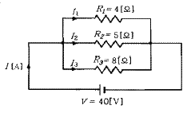
- 5[A]
- 8[A]
- 10[A]
- 23[A]
(정답률: 84%)
40. 다음 중 일을 정의하는 식으로 옳은 것은? (단, 이동거리는 힘의 방향과 같다.)
- 일 = 마력 × 이동거리
- 일 = 힘 / 이동거리
- 일 = 힘 × 이동거리
- 일 = 마력 / 이동거리
(정답률: 87%)
3과목: 자동제어
41. 제어계의 시간영역 동작에서 백분율(%) 최대 오버슈트의 의미는 다음 중 어느 것인가?
- (제2오버슈트 ÷ 최대오버슈트) × 100
- (최대오버슈트 ÷ 제2오버슈트) × 100
- (최대오버슈트 ÷ 최종값) × 100
- (최종값 ÷ 최대오버슈트) × 100
(정답률: 67%)
42. CNC 공작기계에서 서보모터의 회전운동을 테이블의 직선운동으로 바꾸는 기구는?
- 볼 스크루
- 베벨기어
- 스퍼기어
- 웜기어
(정답률: 72%)
43. 예열을 하여 발열 반응을 하는 프로세스 제어시스템의 온도를 제어하는데 있어 단순한 피드백 제어의 경우 예열단계에서 오버슈트(over shoot)의 주된 원인이 되는 제어 동작은?
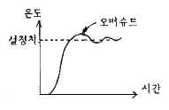
- 비례적분미분동작(PID동작)
- 미분동작(D동작)
- 적분동작(I동작)
- 비례미분동작(PD동작)
(정답률: 67%)
44. 마이크로프로세서의 4비트 출력포트 P는 아래 그림의 PA0~PA3의 단자의 연결되어 있다. DC모터가 주어진 동작조건과 같이 작동할 때 시계방향(CW)으로 모터가 회전하기 위한 출력포트 P의 값은?
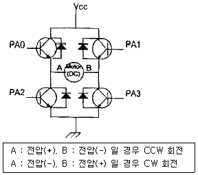
- 3H
- 6H
- 9H
- BH
(정답률: 67%)
45. 시퀀스 제어회로에서 먼저 회로가 ON 되어 있으면 다른 회로의 스위치를 ON 하여도 동작할 수 없는 회로를 무엇이라고 하는가?
- 병렬 제어회로
- 인터록 회로
- 직렬 우선회로
- 한시 동작회로
(정답률: 89%)
46. 다음
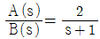
의 전달함수를 미분방정식으로 나타낸 것은?- da(t)/dt + 2a(t) = 2b(t)
- da(t)/dt + a(t) = 2b(t)
- 2da(t)/dt + a(t) = b(t)
- da(t)/dt + 2a(t) = b(t)
(정답률: 62%)
47. 자동차 운전 시 운전자는 자동차의 가속을 위해서 엑셀레이터(Accelerator) 페달(pedal)을 사용하는데 이때 페달의 각도를 검출하기 위한 신호전달 과정으로서 가장 적합한 것은?
- 페달 – 엔코더 – D/A 컨버터 - CPU
- 페달 – 포텐쇼미터 – A/D 컨버터 - CPU
- A/D 컨버터 – 페달 – 포텐쇼미터 - CPU
- A/D 컨버터 – 페달 – 엔코더 – CPU
(정답률: 78%)
48. 자동 제어계를 제어량의 성질에 따라 분류할 때 서보기구에서의 제어량에 속하는 것은?
- 수위, PH
- 온도, 압력
- 위치, 각도
- 속도, 전기량
(정답률: 85%)
49. 출력이 압력에 전혀 영향을 주지 못하는 제어는?
- 프로그램 제어
- 되먹임 제어
- 열린 루프(open loop)제어
- 닫힌 루프(closed loop)제어
(정답률: 77%)
50. 제어계에서 검출부의 제어 기기들 중 접촉식 스위치는?
- 전기리밋 스위치
- 투과형 광전 스위치
- 고주파 발진형 근접 스위치
- 미러 반사혀 광전 스위치
(정답률: 83%)
51. PLC의 중추적 역할을 담당하며, 연산부와 레지스터부로 구성된 장치는?
- 중앙처리장치
- 기억장치
- 출력장치
- 입력장치
(정답률: 86%)
52. 시퀀스제어의 구성에서 검출부에 해당되지 않은 것은?
- 온도스위치
- 타이머
- 압력스위치
- 리밋스위치
(정답률: 84%)
53. 라플라스 변환에서 t 함수와 s 함수 관계가 맞는 것은? (단, t 함수의 초기조건은 모두 0으로 가정한다.)
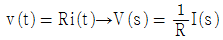
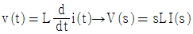
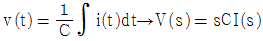
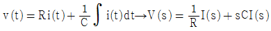
(정답률: 60%)
54. 게이지 압력을 구하는 식으로 옳은 것은?
- 게이지압력 = 절대압력 ÷ 대기압
- 게이지압력 = 절대압력 × 대기압
- 게이지압력 = 절대압력 - 대기압
- 게이지압력 = 절대압력 + 대기압
(정답률: 80%)
55. 다음 중 과도응답에 관한 설명으로 틀린 것은?
- 오버슈트는 응답 중에 생기는 입력과 출력 사이의 최대 편차량을 말한다.
- 지연시간(delay time)이란 응답이 최초로 희망값의 10[%] 진행되는데 요하는 시간을 말한다.
- 감쇠비 = 제 2의 오버슈트 ÷ 최대오버슈트 이다.
- 상승시간(rise time)이란 응답이 희망값이 10[%]에서 90[%]까지 도달하는 시간을 말한다.
(정답률: 74%)
56. PLC 명령어 중 회로도 좌측 제어모선에서 직접 인출되는 논리 스타트를 나타내는 명령어는?
- NAND
- NOR
- AND
- LD
(정답률: 80%)
57. PLC 입·출력부의 요구사항이 아닌 것은?
- 외부 기기와 전기적 규격이 일치해야 한다.
- 외부 기기로부터의 노이즈가 CPU로 전달되지 않도록 해야 한다.
- 외부 기기와의 연결 방법이 쉬워야 한다.
- 입·출력부는 항상 DC 5V를 사용할 수 있도록 한다.
(정답률: 78%)
58. 공압의 특징에 대한 설명으로 잘못된 것은?
- 무단변속이 가능하다.
- 작업속도가 빠르다.
- 에너지를 축적하는데 용이하다.
- 정확한 위치결정 및 중간정지에 우수하다.
(정답률: 73%)
59. 유접점 시퀀스의 단점이 아닌 것은?
- 소비전력이 비교적 적다.
- 동작속도가 느리다.
- 기계적 진동, 충격에 약하다.
- 접점 등의 마모로 수명이 짧다.
(정답률: 73%)
60. 유체의 압력 에너지를 기계적 에너지로 변환하는 장치는?
- 송풍기
- 팬(Fan)
- 압축기
- 실린더
(정답률: 85%)
4과목: 메카트로닉스
61. 다음 중 메모리 내용을 보존하기 위하여 일정시간마다 다시 기억시킬 필요가 있는 것은?
- EPROM
- DRAM
- SRAM
- 마스크 ROM
(정답률: 75%)
62. 전압을 변위로 변환시키는 장치는?
- 전자석
- CDS
- 차동변압기
- 서미스터
(정답률: 43%)
63. 어떤 도선에 5[A]의 전류를 1분간 흘렸다면 이 도선을 통하여 이동한 전하량은 몇 [C]인가?
- 3
- 20
- 180
- 300
(정답률: 86%)
64. 평행한 두 개의 도체 사이의 전류를 흘렸을 때, 흡입력이 작용했다면 전류의 방향은?
- 두 도선의 전류방향은 같다.
- 한쪽 도선에만 흐른다.
- 두 도선의 전류방향은 반대이다.
- 두 도선의 전류방향은 서로 수직이다.
(정답률: 62%)
65. 정전용량 10[F]에 직류를 가했을 때, 용량 리액턴스 Xc[Ω]의 값은?
- 1
- 0
- ∞
- 45
(정답률: 63%)
66. 스텝 각이 3.6° 인 2상 HB형 스테핑모터를 반스텝 시퀀스(1-2상 여자)로 구동하면 1 펄스당 회전각은?
- 1.8°
- 3.6°
- 5.4°
- 0.9°
(정답률: 85%)
67. 다음 중 플립플롭에서 일정 시간만큼 지연시킬 필요가 있을 때 사용되는 것은?
- RS
- JK
- D
- T
(정답률: 58%)
68. 마이크로컴퓨터의 CPU와 입·출력장치사이에 정보의 교환을 원활하게 해주는 역할을 하는 것은?
- 기억장치
- 연산장치
- 센서
- 인터페이스
(정답률: 75%)
69. 측온저항체용 재료의 요구 조건으로 잘못된 것은?
- 저항 온도계수가 작을 것
- 온도-저항 특성이 직선적일 것
- 소선의 가공이 용이할 것
- 화학적, 기계적으로 안정될 것
(정답률: 70%)
70. 센서를 선정하여 사용할 때 고려해야 할 사항으로 거리가 가장 먼 것은?
- 정확성
- 신뢰성
- 상품성
- 반응속도
(정답률: 91%)
71. 다음과 같은 진리표가 주어진 경우의 논리 심볼은?
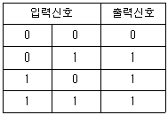
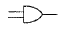
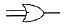
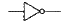
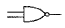
(정답률: 82%)
72. 위치검출기를 사용하지 않아도 모터자체가 지령된 회전량만큼 회전할 수 있는 모터는?
- 직류 서보모터
- 스텝 모터
- 교류 유도모터
- BLDC 모터
(정답률: 83%)
73. 기계장치의 시동, 정지, 운전 상태의 변경 등을 미리 정해진 순서에 따라 행하는 것을 무엇이라고 하는가?
- 시퀀스제어
- 위치기구
- 자동조정
- 공정제어
(정답률: 86%)
74. 마이크로컴퓨터 내부의 버스(bus)에 해당되지 않는 것은?
- 데이터 버스(data bus)
- 컨트롤 버스(control bus)
- 어드레스 버스(address bus)
- 시프트 버스(shift bus)
(정답률: 69%)
75. 유리, 세라믹 등 취성이 강한 재료에 정밀한 구멍 가공을 하려고 한다. 이 작업공정에 가장 적합한 특수가공법은?
- 초음파 가공
- 밀링 가공
- 연삭 가공
- 선삭 가공
(정답률: 87%)
76. 자장 안에 있는 도체가 운동하면서 자장의 자속을 끊으면 기전력이 유도되는 법칙을 적용한 기기로 맞는 것은?
- 전동기
- 변압기
- 발전기
- 건전지
(정답률: 70%)
77. 다음 그림에서 논리회로의 출력을 나타낸 것 중 옳은 것은?
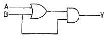
- y = (A · B) · B
- y = (A + B) · B
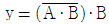
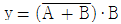
(정답률: 82%)
78. 다음 그림과 같이 선반 척에 공작물을 물려 다이얼 게이지로 측정하였더니 4mm의 눈금 움직임이 있었다. 이 때 편심량의 크기는 몇 mm 인가?
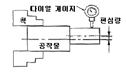
- 1
- 2
- 3
- 4
(정답률: 81%)
79. DC 서보모터에 요구되는 특징과 거리가 먼 것은?
- 전기자 관성이 클 것
- 최대 토크가 클 것
- 회전 토크가 클 것
- 토크의 직선성이 양호할 것
(정답률: 75%)
80. N형 반도체를 만드는데 필요한 5가의 불순물이 아닌 것은?
- 비소
- 인
- 안티몬
- 갈륨
(정답률: 62%)